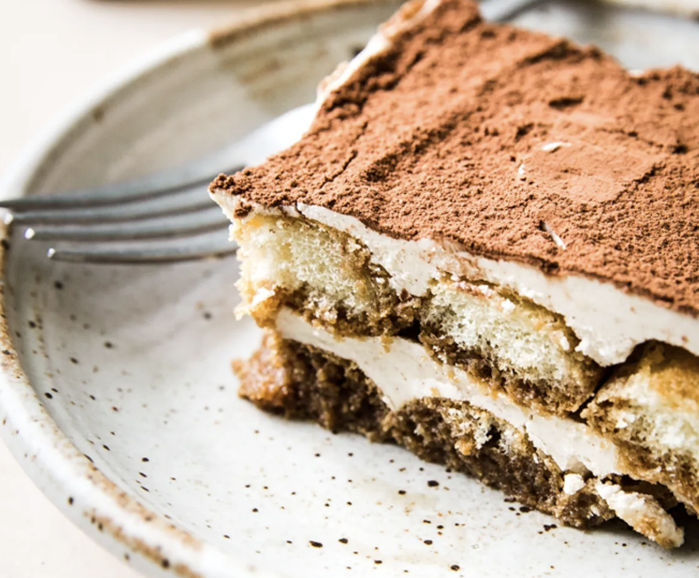

Tiramisu Recipe
by Chef ChatGPT
Indulge in the exquisite taste of tiramisu, a heavenly Italian dessert that layers delicate ladyfinger biscuits soaked in espresso, with creamy mascarpone cheese and a dusting of rich cocoa powder. Decadent, yet light, it's the perfect balance of flavors and textures.

Ingredients:
- 1 cup strong brewed espresso coffee, cooled
- 24 ladyfinger biscuits (Savoiardi)
- 1 1/2 cups mascarpone cheese
- 3 large eggs, separated
- 1/2 cup granulated sugar, divided
- 1 teaspoon vanilla extract
- Pinch of salt
- Unsweetened cocoa powder, for dusting
Steps:
- Brew the espresso coffee and let it cool completely.
- In a mixing bowl, beat the egg yolks with 1/4 cup of sugar until pale and creamy.
- Add the mascarpone cheese and vanilla extract to the egg yolk mixture. Beat until smooth and well combined. If using, add the Marsala wine or rum and mix until incorporated.
- In a separate clean bowl, beat the egg whites with a pinch of salt until soft peaks form. Gradually add the remaining 1/4 cup of sugar and continue beating until stiff peaks form.
- Gently fold the beaten egg whites into the mascarpone mixture until well combined. Be careful not to deflate the egg whites.
- Pour the cooled espresso into a shallow dish. Dip each ladyfinger biscuit into the espresso quickly, ensuring they are soaked but not soggy.
- Arrange a layer of soaked ladyfingers in the bottom of a serving dish or a baking dish.
- Spread half of the mascarpone mixture evenly over the layer of soaked ladyfingers.
- Repeat with another layer of soaked ladyfingers, followed by the remaining mascarpone mixture.
- Cover the tiramisu with plastic wrap and refrigerate for at least 4 hours, or preferably overnight, to allow the flavors to meld and the dessert to set.
- Before serving, dust the top of the tiramisu with unsweetened cocoa powder using a fine sieve.
- Slice and serve chilled. Enjoy your homemade tiramisu!
References